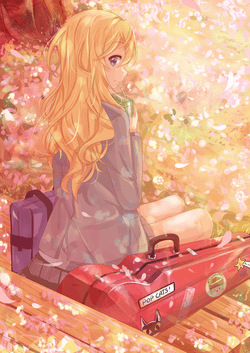

1.未闻花名
这是一部很好看的催泪番，随着年龄的增长，套路见多不怪，很难有东西能够让我感动，未闻花名做到了。 其实我根本不知道自己为什么而感动，但就是很想哭。未闻花名真的很好看，短短11集，你就记住了面码， 你就喜欢上了这个善良的女孩。个人觉得上大学看这部番刚刚好，年少时纯纯的友情，迷糊的爱情，很是让人回味。 很重要的一点是，未闻花名有个神ed【secret base ～君がくれたもの～】百听不厌。
2.龙与虎
现在难有如此清纯不做作的番了，不卖肉，没有超能力，有的只是纯纯的校园爱情。里面的人都是普通人， 你能在他们的身上找到自己的影子。大河画的很可爱，钉宫的声音很迷人，人物情感自然流露，有种水到渠成的感觉。 朋友曾问我，还有没有女主像大河，男主像龙儿的番，我思考许久，发现过去没有，将来也难有。 佳作难得，龙与虎这种淡淡的感动太需灵感，很难有作者再次写出类似的作品。钉宫难再，钉宫理惠是顶级的萌系声优，钉宫青春不再，谁能扛旗。 决心难下，现在卖肉番大行其道，制作一部类似龙与虎的番费时费力还难有收益，而卖肉番只要剧情还可以(甚至有没有剧情都无所谓)， 总会有一大堆绅士捧场的。总之，龙与虎是一部难得的好番，喜欢大河。
3.刀剑神域
|
关于潜行游戏的小说我看过不少，动漫是第一次，而且刀剑神域中游戏还出问题了，大家无法退出游戏， 生命也只有一次，无法复活。看完第一集就觉得世界观很有意思，值得一看。然后亚丝娜一出现，好喜欢好喜欢，只能看完了。 刀剑应该算是我的入宅作，里面所有的日漫元素对我来说都是新的，很有吸引力。现在要再看一遍感觉想必会有所不同， 有些剧情还是挺套路的，不过感觉还是会喜欢。妹子从萝莉到御姐都有，各种属性齐全，当伪后宫番看也未尝不可。 总的还说，刀剑神域是值得一看的好作品。 |
4.四月是你的谎言
|
四月里的人物形象有点奇特，第一眼我是不适应的，但看多了，有种独特的美感。 剧情里有音乐，有爱情，有友情，有亲情，情感为主，佐之以音乐，很有味道。 最值得一提的是，四月有个强大的结尾，看完让人恍然大悟，瞬间升华了四月的格调，让人有看两遍的冲动。 不得不说，四月深深打动了我年少易感的心，好喜欢四月。 入梦落樱满熏香，梦醒犹记四月谎。 此生无悔入四月，来生愿做友人A。 |
 |